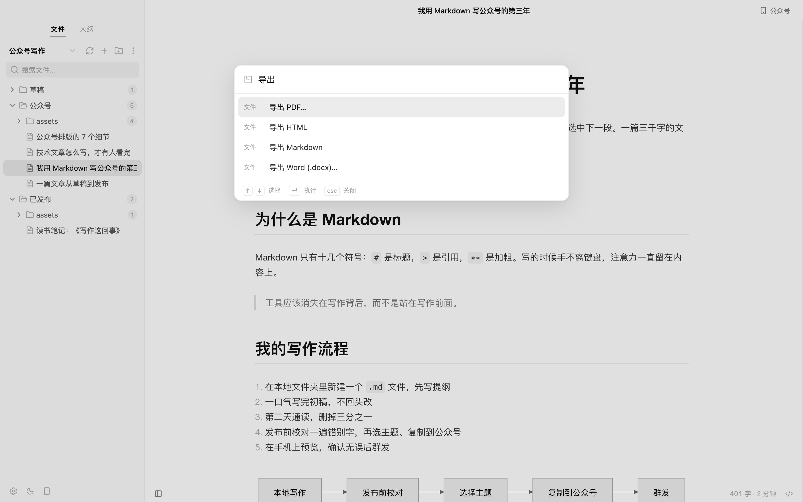

01写作
Markdown 实时预览，像 Typora 一样专心

02校对
发布前 AI 只挑错别字和标点

03排版
选一个公众号主题，所见即所得

04复制到公众号
一键复制粘贴到后台；也能导出 PDF · Word
Slothdown 的写作流程
Markdown 实时预览，像 Typora 一样专心
发布前 AI 只挑错别字和标点
选一个公众号主题，所见即所得

一键复制粘贴到后台；也能导出 PDF · Word